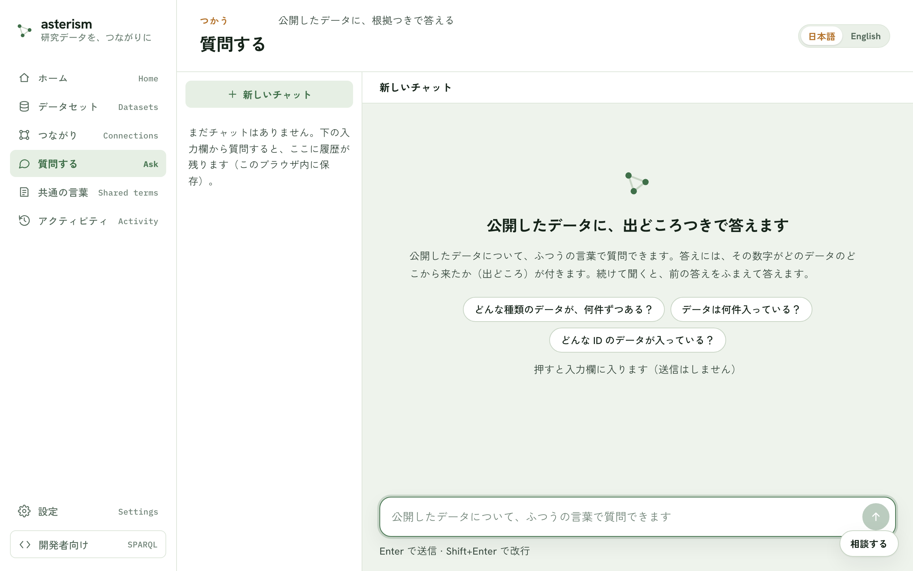

質問する — 公開したデータに、出どころつきで聞く
何ができるか
公開したデータについて、ふつうの言葉で質問できます。答えには、その数字がどのデータのどこから来たか（出どころ）が付きます。続けて聞くと、前の答えをふまえて答えます。
前提
公開済みのデータがあることと、AI の設定が済んでいることが必要です。まだ公開したデータが無いときは「まだ公開したデータがありません」と案内が出るので、メニューの「データを追加」からデータを入れて公開します。AI の設定がまだのときは「AI の設定がまだのようです」と案内が出るので、「設定を開く」ボタンから設定できます（サーバ側ですでに AI が設定済みなら、この画面はそのまま使えます）。
入口
メニューの「質問する」から開きます。入力欄に質問を書いて Enter で送信、Shift+Enter で改行できます。
{kind=link}

答えの見方
答えには、調べ方の確からしさを示すバッジが付きます。
- 「確かめられる答え」— 人が確認ずみの決まった調べ方で、同じ質問ならいつも同じ結果になります。
- 「根拠つきの回答」— 公開したデータに基づく回答です。
- 「AI が組み立てた調べ方（未検証）」— AI がその場でクエリを組み立てて調べています。人の確認前なので、数字を使う前に出どころで確かめてください。
- 「AI の一般知識による回答（データの裏付けなし）」— 公開データからは確認できず、AI が自分の知識だけで答えています。数字として使わないでください。言い方を変えて聞き直すと、公開データに基づく根拠つきの答えになることがあります。
公開データと関係のない質問や、該当データが見つからない質問には、AI が自分の知識で答えることがあります（答えの中でその旨が明記されます）。
出どころをたどる
答えに付く引用カードをクリックすると、出どころのパネルが開きます。その値がどのデータ・どのファイル・どの取り込みから来たかをたどって確認できます。ID の部分はクリックでコピーでき、「このデータセットを開く」ボタンから元のデータセットの画面にも進めます。
チャットの履歴
画面の履歴一覧から、これまでのチャットを開き直せます。「新しいチャット」ボタンで新しく始められ、各チャットは「名前を変更」ボタンで名前を付け直せ、不要になったものは削除できます。保存先は、ブラウザ版ではこのブラウザ内、デスクトップ版ではこの PC です。
数値の比べ方の注意
答えが、数字ではなく文字として保存されている列の大小を比べていることがあります。この場合、最大・最小・順位が正しくないことがあるという注意が表示されます。データセットの画面にある「設計を見直す」ボタンに進み、その列が数値であることを AI に伝えて作り直すと、正しく比べられるようになります。
開発者向け
メニューの「開発者向け」は、クエリを直接書く画面です。SPARQL に馴染みがなければ使う必要はありません。ふつうの質問はメニューの「質問する」からどうぞ。
関連
データを公開するまでの流れは getting-started.md、複数のデータセットをまたいで聞きたいときは crosswalk.mdを参照してください。